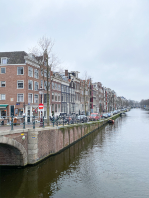
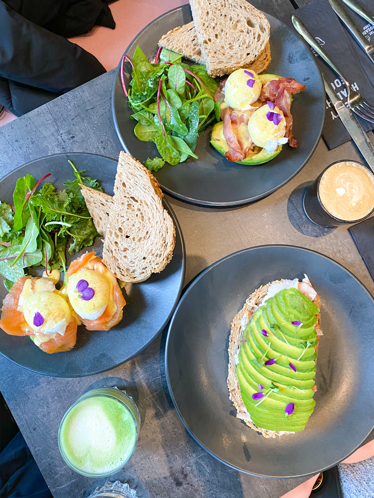
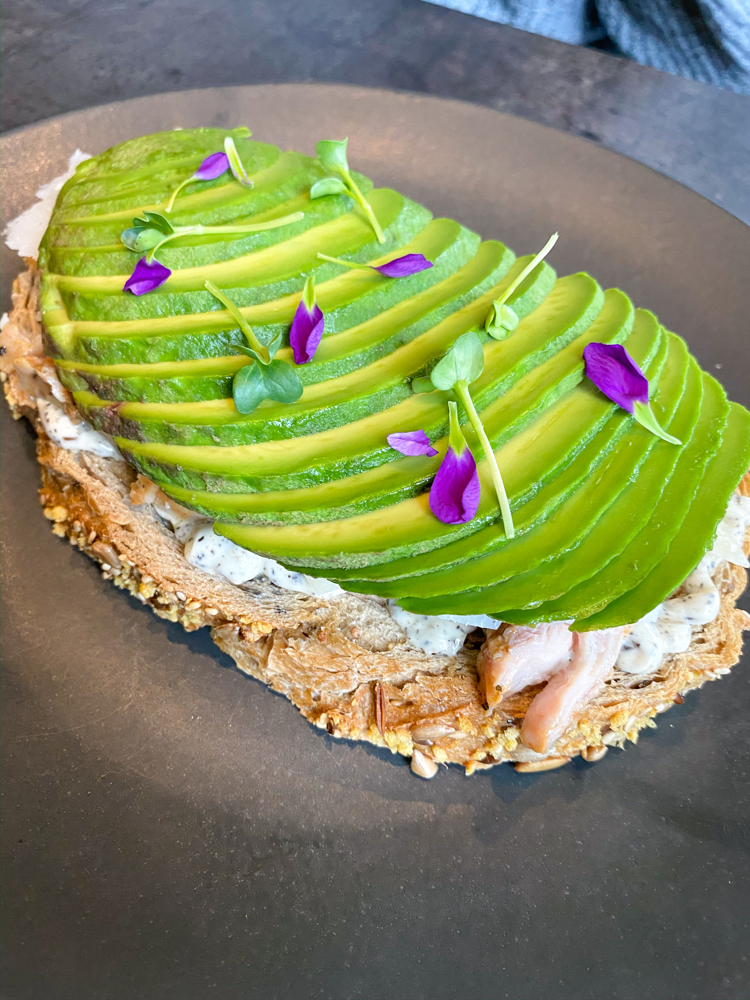
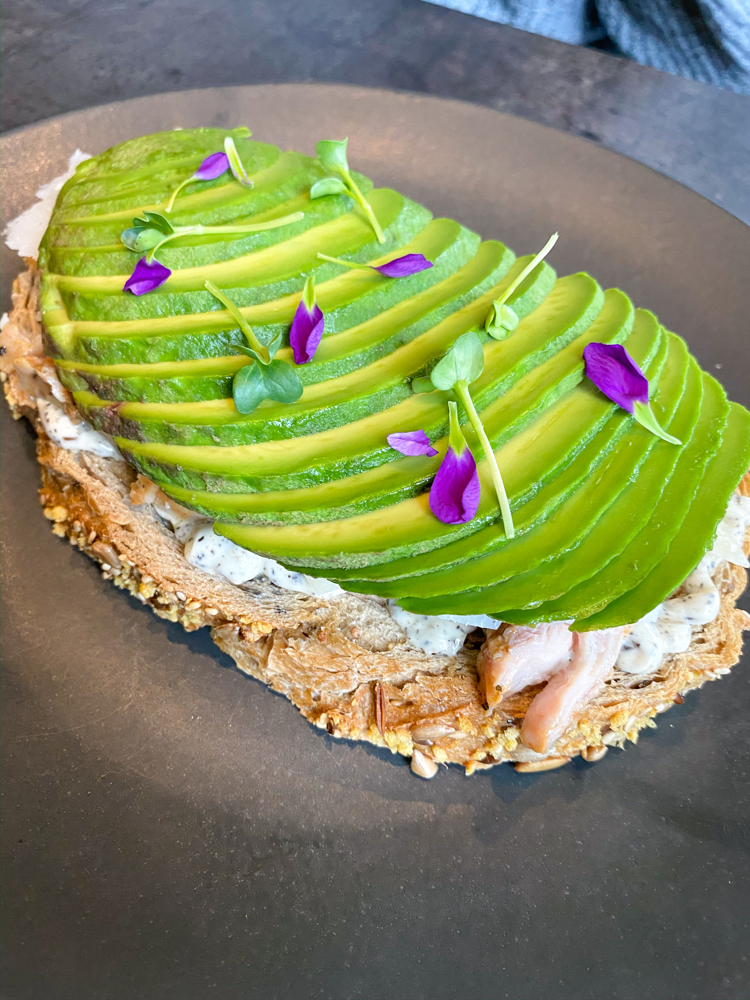

Weekend in Amsterdam: Best Spots to Eat and Drink
Can I just start by saying that Amsterdam is one of the most interesting places I’ve ever been?! The city is the capital of the Netherlands and has many unique attributes, including museums such as the Anne Frank House and the Van Gogh Museum. Besides the more traditional attractions, Amsterdam is home to the Red Light District (do your own research there – haha), coffeeshops (where you can legally buy weed), LOTS of bikes, and stunning canals.
I stayed in Amsterdam for 4 nights, from a Thursday night to a Monday morning, giving me 3 full days to experience the city. In this post, I am going to describe all of the food and drink spots I got to try while there.
Brunch
Remember when I said I only had 3 full days in Amsterdam? Well I made GOOD use out of those 3 days and ate brunch each one. They were all very different from each other, so I have categorized them below.
The Healthier Option: The Avocado Show
The Avocado Show is as aesthetically pleasing as it is delicious! As you may have guessed, everything on the menu incorporates avocado in one way or another. For example, their burgers are served on an avocado instead of a bun, and their benedicts are on top of an avocado. They have a variety of different menu items, including fries, salads, toasts, poke, burgers, and pancakes. This is a great place to try if you are looking to eat on the healthier side!
 

The Fun Option: Gs
Brunch at Gs was not only absolutely delectable, but it was a popping spot! Whoever was on their aux was playing modern, enjoyable music that could get any party going. It is known for their extensive Bloody Mary list, including something for just about anyone. Their food items were what you would expect out of any brunch spot, but the taste was incredible! I do not have a single complaint about any of the dishes my table received. I ate the fried chicken and waffles, and my table shared the challah French toast – both were amazing. If you are looking for a boozy brunch, then Gs is the one for you!